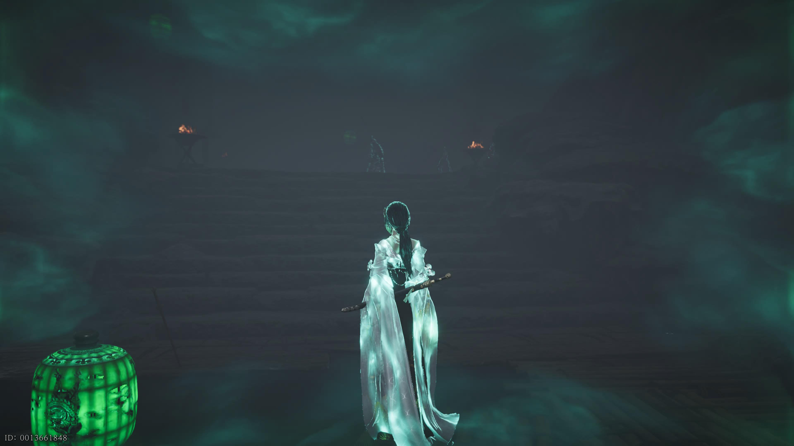
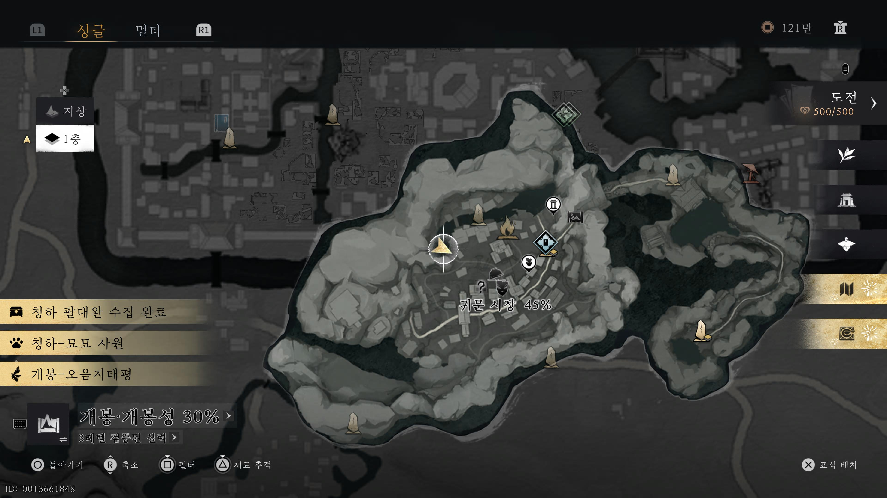
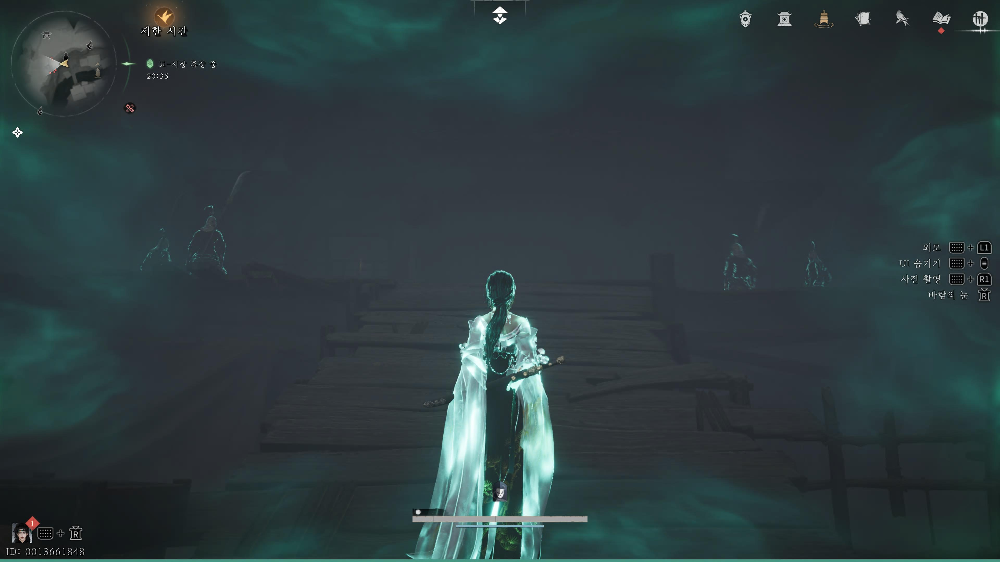

만사록
악을 막는 복숭아나무
마치 외로운 넋들이 방황하는 소리
📜 퀘스트 개요
외로운 넋들을 달래기 위해 도목검(복숭아나무 검)을 찾아 제자리에 돌려놓는 의뢰입니다.
이 퀘스트는 음병 갑옷과 관련된 선행 조건이 필요합니다.
⚠️ 필수 선행 조건
- 필수 퀘스트: [음병 갑옷] 퀘스트를 먼저 완료해야 진행 가능합니다.
- 필수 아이템: 인벤토리에 '음병 갑옷'을 소지하고 있어야 합니다.
도목검 획득
조건을 갖춘 상태로 아래 위치로 이동하세요.
바닥에 떨어진 도목검을 발견할 수 있습니다. 이를 획득하세요.


검 반납
검을 획득한 후 안내된 장소로 이동하세요.
지정된 위치에 도목검을 반납하면 됩니다.


도목검을 제자리에 돌려놓으면
악한 기운을 막아내며
퀘스트는 완료됩니다.